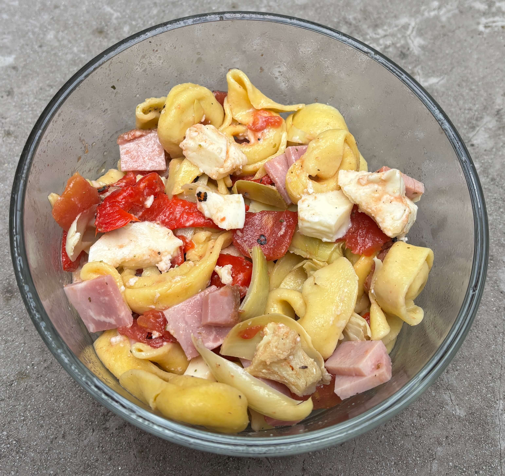

Home
Cheese Tortellini with Ham and Veggies

4 servings
prep: 10 min, cook: 5 min
Ingredients
- 1 (12-ounce) jar marinated artichoke hearts
- 1 (12-ounce) jar roasted red peppers
- Pre-cooked ham
- 1 (8-ounce) ball fresh mozzarella cheese
- 2 (9-ounce) packages fresh cheese tortellini, or 1 (16- to 20-ounce) bag frozen cheese tortellini
- Olive oil
- Kosher salt
- Freshly ground black pepper
Steps
- Bring a large pot of salted water to a boil. Meanwhile, prepare the following, adding them all to a large bowl: drain and coarsely chop 1 jar marinated artichokes and 1 jar roasted red peppers. Cut the ham into small cubes. Cube 1 (8-ounce) ball fresh mozzarella cheese. Stir to combine.
- Add 2 (9-ounce) packages fresh cheese tortellini to the boiling water and cook according to package instructions until al dente. Drain well and add to bowl. Drizzle with olive oil, season with kosher salt and black pepper, and toss to combine.